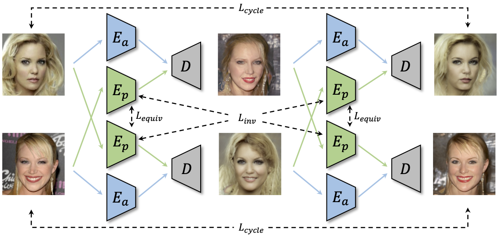
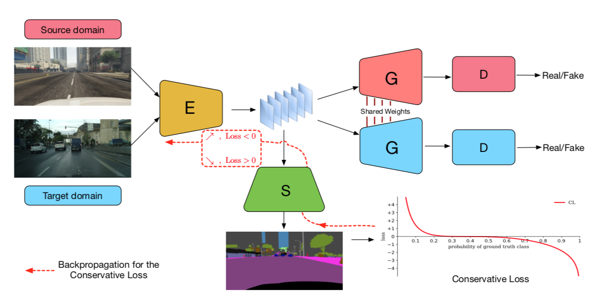

|
Ceyuan Yang PhD Student Department of Information Engineering The Chinese University of Hong Kong E-mail / Google Scholar / Github |

|
Full Publications [Home]
| All by Year / Representation Learning / Video Understanding / Generative modeling |

|
Instance Localization for Self-supervised Detection Pretraining,
Ceyuan Yang, Zhirong Wu, Bolei Zhou, Stephen Lin. IEEE Conference on Computer Vision and Pattern Recognition (CVPR), 2021. [Paper][Code] |

|
Generative Hierarchical Features from Synthesizing Images,
Yinghao Xu*, Yujun Shen*, Jiapeng Zhu, Ceyuan Yang, Bolei Zhou. IEEE Conference on Computer Vision and Pattern Recognition (CVPR), 2021. [Paper][Code] |

|
Semantic Hierarchy Emerges in Deep Generative Representations for Scene Synthesis,
Ceyuan Yang*, Yujun Shen*, Bolei Zhou. International Journal of Computer Vision (IJCV), 2020. [Paper][Webpage][Code][Workshop version] |

|
InterFaceGAN: Interpreting the Disentangled Face Representation Learned by GANs,
Yujun Shen, Ceyuan Yang, Xiaoou Tang, Bolei Zhou. IEEE Trans. on Pattern Analysis and Machine Intelligence (T-PAMI), 2020. [Paper][Code][Webpage] |

|
Learning Motion Priors for Efficient Video Object Detection,
Zhengkai Jiang, Yu Liu, Ceyuan Yang, Jihao Liu, Qian Zhang, Shiming Xiang, Chunhong Pan. IEEE European Conference on Computer Vision (ECCV), 2020. [Paper][Code] |
|  |
Unsupervised Landmark Learning from Unpaired Data,
Yinghao Xu*, Ceyuan Yang*, Ziwei Liu, Bo Dai, Bolei Zhou. arxiv pre-print, 2020. [Paper][Code] |

|
Video Representation Learning with Visual Tempo Consistency,
Ceyuan Yang, Yinghao Xu, Bo Dai, Bolei Zhou. arxiv pre-print, 2020. [Paper][Code] |
|
Temporal Pyramid Network for Action Recognition,
Ceyuan Yang*, Yinghao Xu*, Jianping Shi, Bo Dai, Bolei Zhou. IEEE Conference on Computer Vision and Pattern Recognition (CVPR), 2020. [Paper][Webpage][Code] |
|

|
Adapting Object Detectors via Selective Cross-Domain Alignment,
Xinge Zhu, Jiangmiao Pang, Ceyuan Yang, Jianping Shi, Dahua Lin. IEEE Conference on Computer Vision and Pattern Recognition (CVPR), 2019. [Paper][Code] |
|
Pose Guided Human Video Generation,
Ceyuan Yang, Zhe Wang, Xinge Zhu, Chen Huang, Jianping Shi, Dahua Lin. IEEE European Conference on Computer Vision (ECCV), 2018. [Paper] |
|
|  |
Penalizing Top Performers: Conservative Loss for Semantic Segmentation Adaptation,
Xinge Zhu, Hui Zhou, Ceyuan Yang, Jianping Shi, Dahua Lin. IEEE European Conference on Computer Vision (ECCV), 2018. [Paper] |
|
Remote Sensing Image Scene Classification via Learning Discriminative CNNs,
Gong Cheng, Ceyuan Yang, Xiwen Yao, Lei Guo, Junwei Han. IEEE Trans. on Geoscience and Remote Sensing (TGRS), 2018. [Paper][Code] |